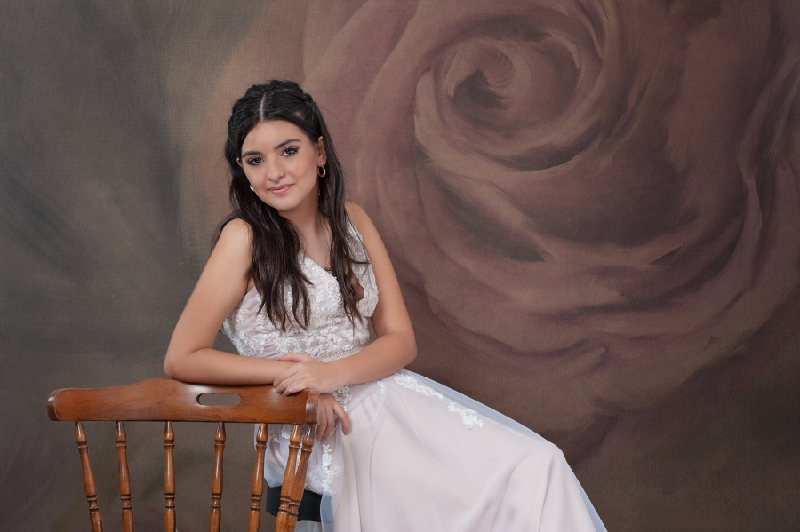
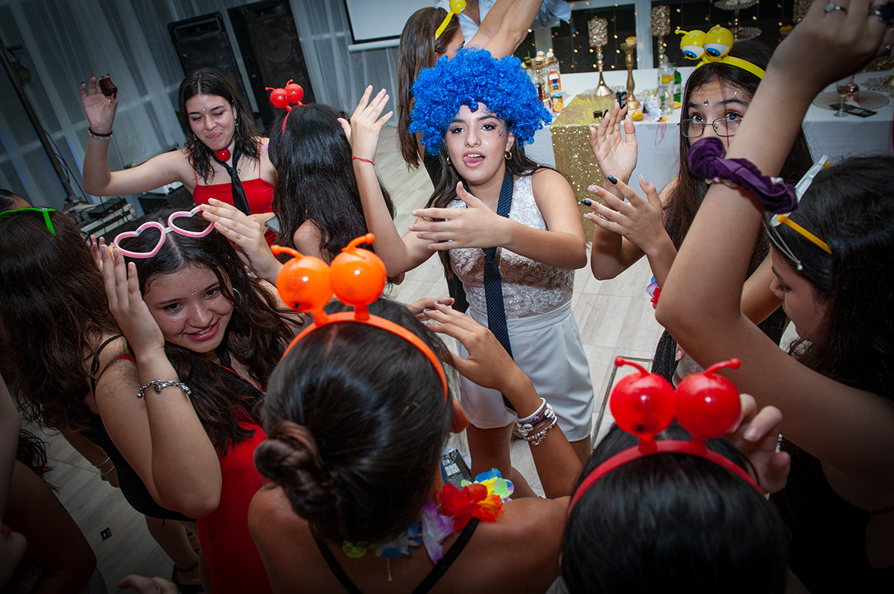
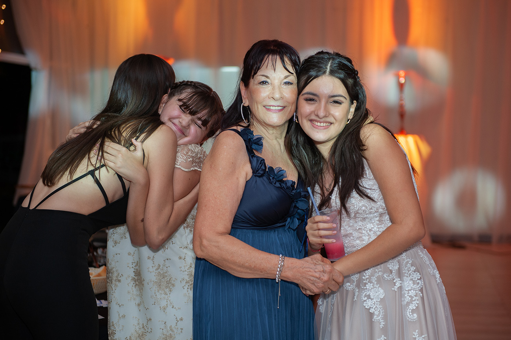
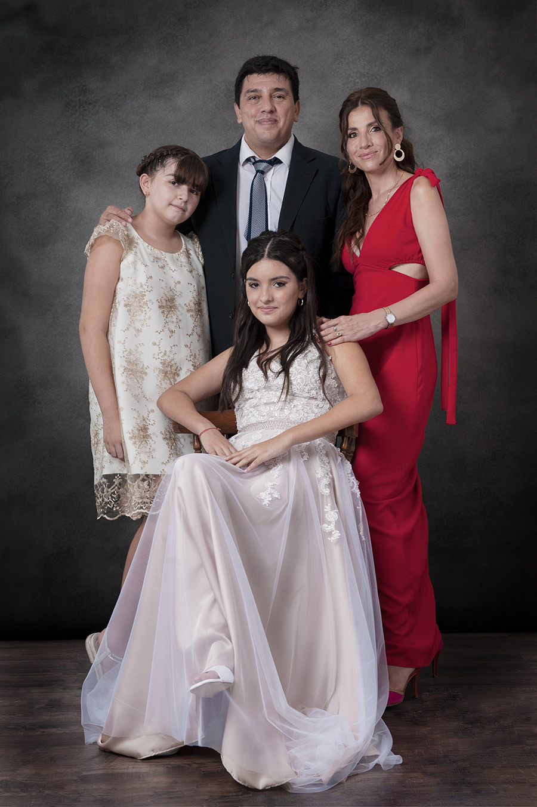

Tus 15 años registrados como nunca con nuestro servicio fotográfico
El cumpleaños número 15 de una jovencita, tiene gran trascendencia en la cultura latinoamericana, y en Santiago del Estero no es la excepción. Veamos cuál es el origen de este ritual ancestral cuya vigencia permanece en la actualidad, y los aspectos que deberías tener en cuenta para organizarlo.
Mereces tener el mejor retrato de tus 15 años
Se cree que hace más de 500 años antes de Cristo, en la cultura precolombina, Mayas y Aztecas realizaban rituales de pubertad para dar comienzo a la entrada a la vida adulta y comienzo de responsabilidades de las niñas. Este ritual, presentaba a la niña, convertida en una mujer capaz de procrear y preparada para el matrimonio. Es decir, se representa la transformación de una etapa de su vida a otra.
Con la venida y conquista de la cultura española, estos rituales y otros, comenzaron a perder fuerza y hasta sufrieron modificaciones. Los españoles introdujeron la misa, el vals y el vestido en el festejo de los 15 años.
En la actualidad, la fiesta de quince años está vista como un gran evento religioso, social y de gran relevancia familiar, en el cual sigue vigente el principio original: festejar la transformación de una muchacha joven en otra adolescente. La quinceañera (así se le llama a la joven cumpleañera), suele lucir un vestido de noche muy elegante que realza sus rasgos femeninos, puede tener también una corona o tiara y generalmente un peinado que resalta su madurez.

Tu escencia, tu delicadez y personalidad plasmadas en Retratos
Cómo organizar y qué aspectos tener en cuenta a la hora de realizar tu fiesta de 15 años en Santiago del Estero
En la actualidad, y a diferencia de décadas pasadas, la organización, planificación, e incluso ornamentación, suelen estar a cargo de un Organizador de Eventos, cuya finalidad es gestionar las actividades durante el cumpleaños. La ardua tarea de buscar a los distintos profesionales que trabajarán durante el evento (Dj, fotógrafo, filmación, catering, vajilla, iluminación, salón de eventos, decorador, entre otros) suele quedar a cargo del Organizador de eventos, quien tendrá la tarea de gestionar el trabajo en equipo.
Con la aparición del Organizador de eventos, los padres y hasta parientes de la cumpleañera, sólo tienen que preocuparse por disfrutar del evento.

La diversión y los momentos más alocados de tu fiesta serán parte de tu Photo album
Qué cualidades debería tener un buen Organizador de eventos en Santiago del Estero
Con la aparición del Organizador de eventos, ya no tienes que preocuparte por todos los detalles de tu gran fiesta de cumpleaños. En Santiago del Estero, existen varios Organizadores que seguramente harán de tu fiesta la mejor de todas. Veamos qué cualidades identifican a un buen Organizador de eventos para que tu celebración sea exitosa:
Es una persona inconformista: busca siempre el espacio más indicado y cómodo para tu fiesta. Se preocupa por el catering, la mejor puesta en escena, y en resumen, busca y encuentra la mejor opción en función de tu presupuesto.
Es una persona paciente: en todo evento surgen imprevistos, servicios que no llegan en la fecha y horarios establecidos, lo que conlleva a trabajar bajo presión. Bajo semejante escenario, tener un grado alto de paciencia ayuda a que el evento sea exitoso.
Es una persona organizada: la anticipación y correcta gestión del tiempo es vital.
Tiene don de gentes: trasmitir optimismo y ser una persona sonriente es una característica importante.
Es un buen comunicador: además de ser sociable cara a cara, hace uso de las redes sociales y tiene habilidades para comunicarse con asertividad.

Tus familiares directos ocupan un lugar muy importante en tus recuerdos
La importancia del recuerdo de tu cumpleaños número 15 en Santiago del Estero
¿Te imaginas intentar recordar cada aspecto de tu fiesta de cumpleaños? Eso sería prácticamente imposible. Sin embargo, las fotografías estimulan la evocación de esos recuerdos que parecían estar olvidados en algún lugar de tu mente. ¿No te ha ocurrido que luego de observar una fotografía tuya de mucho tiempo atrás, comienzas a conectarte con esos recuerdos que parecían aislados? Pues los recuerdos son así, gracias a ciertos estímulos (en este caso, una fotografía) puedes llegar a recrear en tu mente todo un proceso recordatorio que te permitirá transitar por tu memoria.
Eso es lo maravilloso de la fotografía: es un soporte para tu memoria, que tiene la capacidad de evocar recuerdos de ti, conectándolos con el presente, es un estimulador de expresiones de vivencias pasadas.
Dicho esto, fotografiar tu cumpleaños pasa a ser una tarea trascendental para mí. La responsabilidad y habilidad de crear imágenes capaces de evocar futuros recuerdos en tu mentees mi principal prioridad.
Nuestro servicio de fotografía profesional estará a la altura de tu cumpleaños. Podremos documentar todo el evento, y con el pasar de los años, se convertirá en el único recuerdo tangible de toda tu inversión.

¿Estas buscando un fotógrafo para tu cumpleaños de 15?
Estamos aquí para ayudarte. Seguramente tendrás muchos interrogantes. Sabemos que tu cumpleaños es muy importante.
Planificar y llevar a cabo la documentación fotográfica de tu inolvidable cumpleaños es todo un proceso, que requiere gran planificación y dedicación. Te invito a chatear conmigo, para que podamos evacuar tus dudas, para que podamos conocer tus necesidades, y en función de eso, darte el servicio que cumpla con tus expectativas: